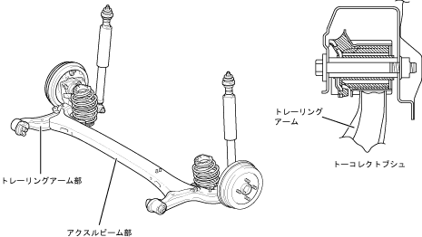

| トレーリングアーム ＆ アクスルビーム |
| ● |
トレーリングアーム部は，スプリングシートをアームから絞り一体成形でつくることにより，軽量化・高剛性化をはかりました。また，断面形状の最適化により十分な剛性を確保しました。
|
| ● |
アクスルビーム部は，後ろ開きU字断面として床下の空力性能向上に寄与しました。また，ビーム中央部形状を湾曲・非対称化することでアライメント変化の最適化と空力性能向上に配慮しました。
|
| ● |
トレーリングアームとアクスルビームの接合部分の断面形状の最適化により剛性と信頼性を確保しながら軽量化を実現しました。
|
| ● |
アームブシュは，軽量・コンパクトなトーコレクトブシュとしました。車両の前後上下方向にすぐりを設定し，優れた操縦性・安定性および乗り心地を実現しました。
|
|  |